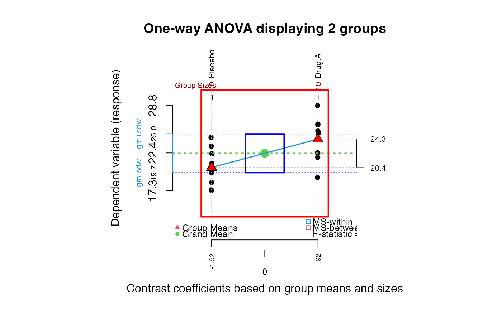
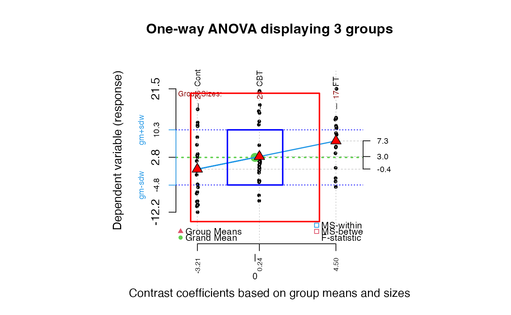
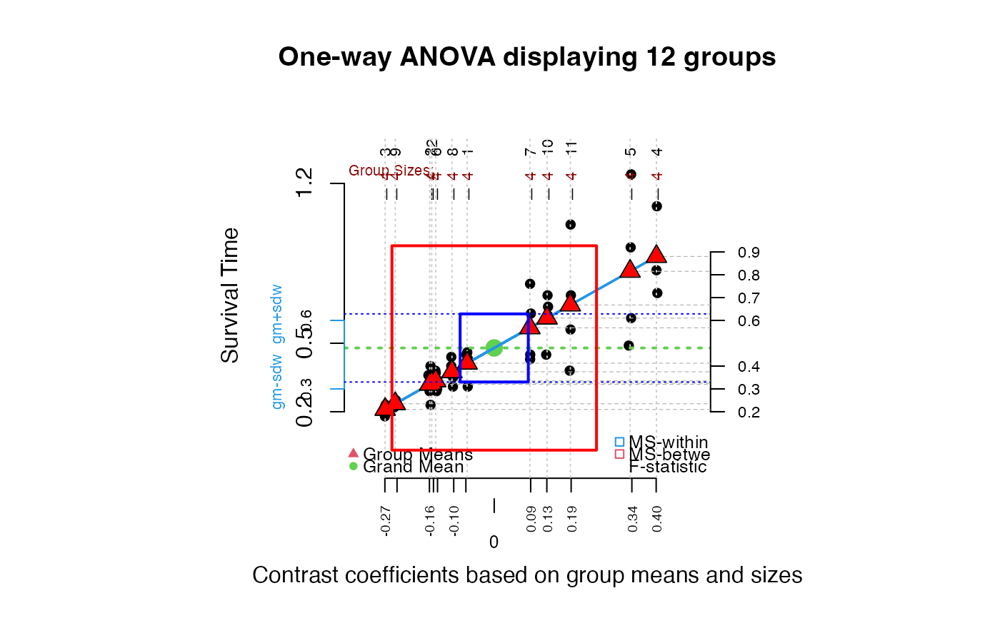
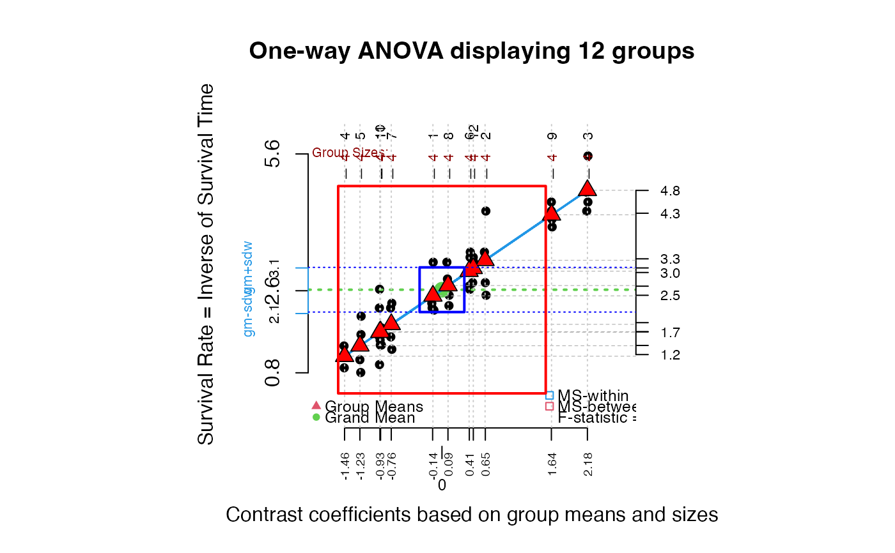
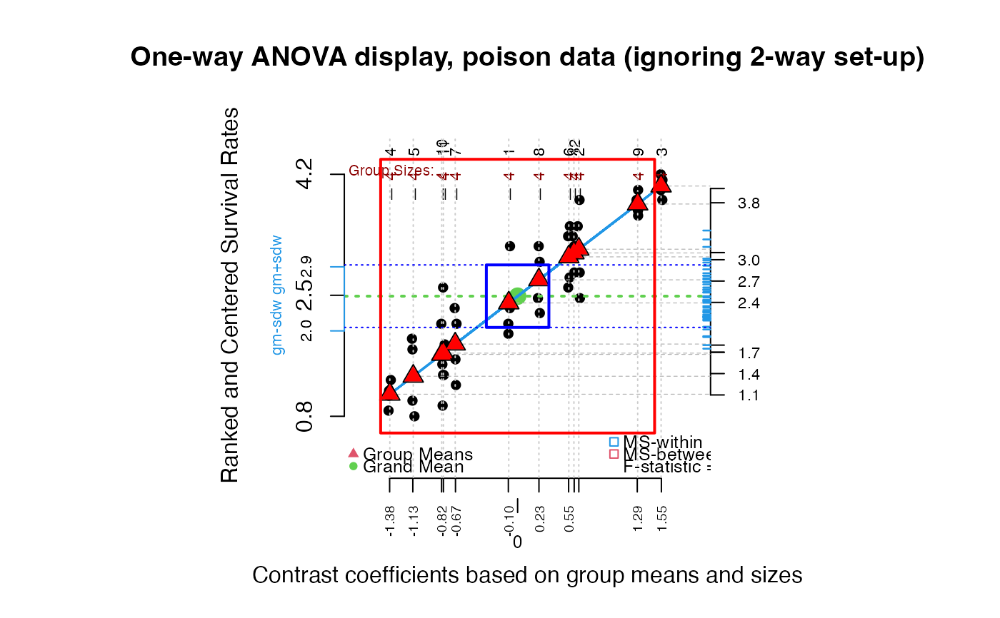

Graphic display for one-way ANOVA
granova.1w.RdGraphic to display data for a one-way analysis of variance, and also to help understand how ANOVA works, how the F statistic is generated for the data in hand, etc. The graphic may be called 'elemental' or 'natural' because it is built upon the key question that drives one-way ANOVA.
Usage
granova.1w(data, group = NULL, dg = 2, h.rng = 1.25, v.rng = 0.2,
box = FALSE, jj = 1, kx = 1, px = 1, size.line = -2.5,
top.dot = 0.15, trmean = FALSE, resid = FALSE, dosqrs = TRUE,
ident = FALSE, pt.lab = NULL, xlab = NULL, ylab = NULL,
main = NULL, ...)Arguments
- data
Dataframe or vector. If a dataframe, the two or more columns are taken to be groups of equal size (whence
groupis NULL). Ifdatais a vector,groupmust be a vector, perhaps a factor, that indicates groups (unequal group sizes allowed with this option).- group
Group indicator, generally a factor in case
datais a vector.- dg
Numeric; sets number of decimal points in output display, default = 2.
- h.rng
Numeric; controls the horizontal spread of groups, default = 1.25
- v.rng
Numeric; controls the vertical spread of points, default = 0.25.
- box
Logical; provides a bounding box (actually a square) to the graph; default FALSE.
- jj
Numeric; sets horizontal jittering level of points; when pairs of ordered means are close to one another, try jj < 1; default = 1.
- kx
Numeric; controls relative sizes of
cex, default = 1.0- px
Numeric; controls relative sizes of
cex.axis, default = 1.0- size.line
Numeric; controls vertical location of group size and name labels, default = -2.5.
- top.dot
Numeric; controls hight of end of vertical dotted lines through groups; default = .15.
- trmean
Logical; marks 20% trimmed means for each group (as green cross) and prints out those values in output window, default = FALSE.
- resid
Logical; displays marginal distribution of residuals (as a 'rug') on right side (wrt grand mean), default = FALSE.
- dosqrs
Logical; ensures plot of squares (for variances); when FALSE or the number of groups is 2, squares will be suppressed, default = TRUE.
- ident
Logical; allows user to identify specific points on the plot, default = FALSE.
- pt.lab
Character vector; allows user to provide labels for points, else the rownames of xdata are used (if defined), or if not labels are 1:N (for N the total number of all data points), default = NULL.
- xlab
Character; horizontal axis label, default = NULL.
- ylab
Character; vertical axis label, default = NULL.
- main
Character; main label, top of graphic; can be supplied by user, default = NULL, which leads to printing of generic title for graphic.
- ...
Optional arguments to be passed to
identify, for exampleoffset
Details
The central idea of the graphic is to use the fact that a one way analysis of variance F statistic is the ratio of two variances each of which can usefully be presented graphically. In particular, the sum of squares between (among) can be represented as the sum of products of so-called effects (each being a group mean minus the grand mean) and the group means; when these effects are themselves plotted against the group means a straight line necessarily ensues. The group means are plotted as (red triangles along this line. Data points (jittered) for groups are displayed (vertical axis) with respect to respective group means. One-way ANOVA residuals can be displayed (set resid=TRUE) as a rug plot (on right margin); the standard deviation of the residuals, when squared, is just the mean square within, which corresponds to area of blue square. The conventional F statistic is just a ratio of the between to the within mean squares, or variances, each of which corresponds to areas of squares in the graphic. The blue square, centered on the grand mean vertically and zero for the X-axis, corresponds to mean square within (with side based on [twice] the pooled standard deviation); the red square corresponds to the mean square between, also centered on the grand mean. Use of effects to locate the groups in the order of the observed means, from left to right (by increasing size) yields this 'elemental' graphic for this commonly used statistical method.
Groups need not be of the same sizes, nor do data need to reflect any particular distributional characteristics. Skewness, outliers,
clustering of data points, and various other features of the data may be seen in this graphic, possibly identified using point labels.
Trimmed means (20%) can also be displayed if desired. Finally, by redisplaying the response data in two or more versions of the graphic
it can be useful to visualize various effects of non-linear data transformations. (ident=TRUE).
Value
Returns a list with two components:
- grandsum
Contains the basic ANOVA statistics: the grandmean, the degrees of freedom and mean sums of squares between and within groups, the F statistic, F probability and the ratio between the sum of squares between groups and the total sum of squares.
- stats
Contains a table of statistics by group: the size of each group, the contrast coefficients used in plotting the groups, the weighted means, means, and 20% trimmed means, and the group variances and standard deviations.
References
Fundamentals of Exploratory Analysis of Variance, Hoaglin D., Mosteller F. and Tukey J. eds., Wiley, 1991.
Author
Robert M. Pruzek RMPruzek@yahoo.com, James E. Helmreich James.Helmreich@Marist.edu
Examples
data(arousal)
summary(arousal)
#> Placebo Drug.A Drug.B Drug.A.B
#> Min. :17.30 Min. :19.10 Min. :19.80 Min. :21.90
#> 1st Qu.:18.73 1st Qu.:22.40 1st Qu.:22.52 1st Qu.:25.73
#> Median :20.20 Median :25.15 Median :23.15 Median :27.80
#> Mean :20.43 Mean :24.27 Mean :23.82 Mean :27.81
#> 3rd Qu.:21.98 3rd Qu.:26.00 3rd Qu.:26.07 3rd Qu.:29.00
#> Max. :24.50 Max. :28.80 Max. :28.20 Max. :34.10
##Drug A
granova.1w(arousal[,1:2], h.rng = 1.6, v.rng = 0.5, top.dot = .35)

#> $grandsum
#> Grandmean df.bet df.with MS.bet MS.with
#> 22.35 1.00 18.00 73.73 6.86
#> F.stat F.prob SS.bet/SS.tot
#> 10.75 0.00 0.37
#>
#> $stats
#> Size Contrast Coef Wt'd Mean Mean Trim'd Mean Var. St. Dev.
#> Placebo 10 -1.92 20.43 20.43 20.30 5.83 2.41
#> Drug.A 10 1.92 24.27 24.27 24.45 7.89 2.81
#>
#########################
data(anorexia, package="MASS")
summary(anorexia)
#> Treat Prewt Postwt
#> CBT :29 Min. :70.00 Min. : 71.30
#> Cont:26 1st Qu.:79.60 1st Qu.: 79.33
#> FT :17 Median :82.30 Median : 84.05
#> Mean :82.41 Mean : 85.17
#> 3rd Qu.:86.00 3rd Qu.: 91.55
#> Max. :94.90 Max. :103.60
wt.gain <- anorexia[, 3] - anorexia[, 2]
granova.1w(wt.gain, group = anorexia[, 1], size.line = -3)

#> $grandsum
#> Grandmean df.bet df.with MS.bet MS.with
#> 2.76 2.00 69.00 307.32 56.68
#> F.stat F.prob SS.bet/SS.tot
#> 5.42 0.01 0.14
#>
#> $stats
#> Size Contrast Coef Wt'd Mean Mean Trim'd Mean Var. St. Dev.
#> Cont 26 -3.21 -0.49 -0.45 -1.16 63.82 7.99
#> CBT 29 0.24 3.63 3.01 1.80 53.41 7.31
#> FT 17 4.50 5.15 7.26 7.91 51.23 7.16
#>
##########################
data(poison)
summary(poison)
#> Poison Treatment Group SurvTime RateSurvTime
#> I :16 A:12 Min. : 1.00 Min. :0.1800 Min. :0.8065
#> II :16 B:12 1st Qu.: 3.75 1st Qu.:0.3000 1st Qu.:1.6065
#> III:16 C:12 Median : 6.50 Median :0.4000 Median :2.5000
#> D:12 Mean : 6.50 Mean :0.4794 Mean :2.6224
#> 3rd Qu.: 9.25 3rd Qu.:0.6225 3rd Qu.:3.3333
#> Max. :12.00 Max. :1.2400 Max. :5.5556
#> RankRateSurvTime
#> Min. :0.800
#> 1st Qu.:1.653
#> Median :2.460
#> Mean :2.488
#> 3rd Qu.:3.330
#> Max. :4.200
##Note violation of constant variance across groups in following graphic.
granova.1w(poison$SurvTime, group = poison$Group, ylab = "Survival Time")

#> $grandsum
#> Grandmean df.bet df.with MS.bet MS.with
#> 0.48 11.00 36.00 0.20 0.02
#> F.stat F.prob SS.bet/SS.tot
#> 9.01 0.00 0.73
#>
#> $stats
#> Size Contrast Coef Wt'd Mean Mean Trim'd Mean Var. St. Dev.
#> 3 4 -0.27 0.21 0.21 0.21 0.00 0.02
#> 9 4 -0.24 0.23 0.23 0.23 0.00 0.01
#> 2 4 -0.16 0.32 0.32 0.32 0.01 0.08
#> 12 4 -0.15 0.32 0.32 0.32 0.00 0.03
#> 6 4 -0.14 0.33 0.33 0.33 0.00 0.05
#> 8 4 -0.10 0.38 0.38 0.38 0.00 0.06
#> 1 4 -0.07 0.41 0.41 0.41 0.00 0.07
#> 7 4 0.09 0.57 0.57 0.57 0.02 0.16
#> 10 4 0.13 0.61 0.61 0.61 0.01 0.11
#> 11 4 0.19 0.67 0.67 0.67 0.07 0.27
#> 5 4 0.34 0.81 0.81 0.81 0.11 0.34
#> 4 4 0.40 0.88 0.88 0.88 0.03 0.16
#>
##RateSurvTime = SurvTime^-1
granova.1w(poison$RateSurvTime, group = poison$Group,
ylab = "Survival Rate = Inverse of Survival Time")

#> $grandsum
#> Grandmean df.bet df.with MS.bet MS.with
#> 2.62 11.00 36.00 5.17 0.24
#> F.stat F.prob SS.bet/SS.tot
#> 21.53 0.00 0.87
#>
#> $stats
#> Size Contrast Coef Wt'd Mean Mean Trim'd Mean Var. St. Dev.
#> 4 4 -1.46 1.16 1.16 1.16 0.04 0.20
#> 5 4 -1.23 1.39 1.39 1.39 0.31 0.55
#> 10 4 -0.93 1.69 1.69 1.69 0.13 0.36
#> 11 4 -0.92 1.70 1.70 1.70 0.49 0.70
#> 7 4 -0.76 1.86 1.86 1.86 0.24 0.49
#> 1 4 -0.14 2.49 2.49 2.49 0.25 0.50
#> 8 4 0.09 2.71 2.71 2.71 0.17 0.42
#> 6 4 0.41 3.03 3.03 3.03 0.18 0.42
#> 12 4 0.47 3.09 3.09 3.09 0.06 0.24
#> 2 4 0.65 3.27 3.27 3.27 0.68 0.82
#> 9 4 1.64 4.26 4.26 4.26 0.06 0.23
#> 3 4 2.18 4.80 4.80 4.80 0.28 0.53
#>
##Nonparametric version: RateSurvTime ranked and rescaled
##to be comparable to RateSurvTime;
##note labels as well as residual (rug) plot below.
granova.1w(poison$RankRateSurvTime, group = poison$Group,
ylab = "Ranked and Centered Survival Rates",
main = "One-way ANOVA display, poison data (ignoring 2-way set-up)",
res = TRUE)

#> $grandsum
#> Grandmean df.bet df.with MS.bet MS.with
#> 2.49 11.00 36.00 3.70 0.19
#> F.stat F.prob SS.bet/SS.tot
#> 19.18 0.00 0.85
#>
#> $stats
#> Size Contrast Coef Wt'd Mean Mean Trim'd Mean Var. St. Dev.
#> 4 4 -1.38 1.11 1.11 1.11 0.03 0.18
#> 5 4 -1.13 1.36 1.36 1.36 0.28 0.53
#> 10 4 -0.82 1.67 1.67 1.67 0.10 0.31
#> 11 4 -0.80 1.69 1.69 1.69 0.50 0.71
#> 7 4 -0.67 1.81 1.81 1.81 0.24 0.49
#> 1 4 -0.10 2.39 2.39 2.39 0.30 0.55
#> 8 4 0.23 2.72 2.72 2.72 0.19 0.44
#> 6 4 0.55 3.04 3.04 3.04 0.18 0.42
#> 12 4 0.61 3.09 3.09 3.09 0.05 0.22
#> 2 4 0.66 3.15 3.15 3.15 0.39 0.62
#> 9 4 1.29 3.78 3.78 3.78 0.03 0.16
#> 3 4 1.55 4.04 4.04 4.04 0.03 0.16
#>